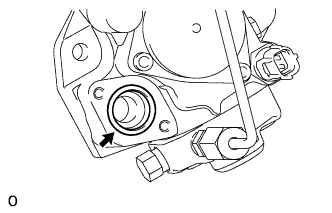
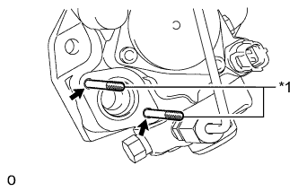
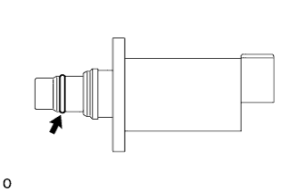
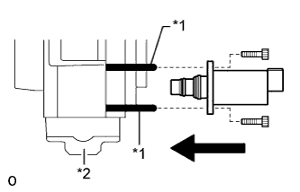

КЛАПАН РЕГУЛИРОВАНИЯ ВСАСЫВАНИЯ > УСТАНОВКА |
| 1. УСТАНОВИТЕ КЛАПАН РЕГУЛИРОВАНИЯ ВСАСЫВАНИЯ В СБОРЕ |
Нанесите моторное масло на новое кольцевое уплотнение.
|  |
Установите кольцевое уплотнение в канавку для кольцевого уплотнения нагнетающего топливного насоса.
|  |
Установите направляющие штифты, используемые для вставки клапана регулирования всасывания, в болтовые отверстия.
| *1 | Направляющий штифт |
|  |
Нанесите моторное масло на кольцевое уплотнение на конце клапана регулирования всасывания.
|  |
Контролируя перпендикулярность клапана регулирования всасывания и нагнетающего топливного насоса, сдвиньте клапан регулирования всасывания по направляющим штифтам и вставьте его в нагнетающий топливный насос, как показано на рисунке.
| *1 | Направляющий штифт |
| *2 | Нагнетающий топливный насос |
Удерживая клапан регулирования всасывания на месте, извлеките направляющие штифты, наживите 2 новых болта и равномерно затяните их вручную.
Пользуясь торцевым гаечным ключом на 5 мм, равномерно затяните 2 болта.
Подсоедините разъем к клапану регулирования всасывания.
| 2. УСТАНОВИТЕ НАГНЕТАЮЩИЙ ТОПЛИВНЫЙ НАСОС В СБОРЕ |
| 3. ДОБАВЬТЕ ОХЛАЖДАЮЩУЮ ЖИДКОСТЬ ДВИГАТЕЛЯ |
| 4. УДАЛИТЕ ВОЗДУХ ИЗ ТОПЛИВНОЙ СИСТЕМЫ |
| 5. ВЫПОЛНИТЕ ИНИЦИАЛИЗАЦИЮ НАГНЕТАЮЩЕГО ТОПЛИВНОГО НАСОСА |
| 6. ПРОВЕРЬТЕ, НЕТ ЛИ УТЕЧЕК ОХЛАЖДАЮЩЕЙ ЖИДКОСТИ |
Заполните радиатор охлаждающей жидкостью и подсоедините приспособление для опрессовки системы охлаждения и проверки пробки радиатора.
Прогрейте двигатель.
С помощью приспособления для опрессовки системы охлаждения и проверки пробки радиатора увеличьте давление в радиаторе до 123 кПа (1,3 кгс/см2, 18 фунтов на кв. дюйм) и убедитесь, что давление не падает.
Если давление снижается, проверьте на наличие утечек шланги, радиатор и насос системы охлаждения. При отсутствии внешних утечек проверьте сердцевину нагревателя, блок цилиндров и головку.
| 7. ПРОВЕРЬТЕ, НЕТ ЛИ УТЕЧЕК ТОПЛИВА |